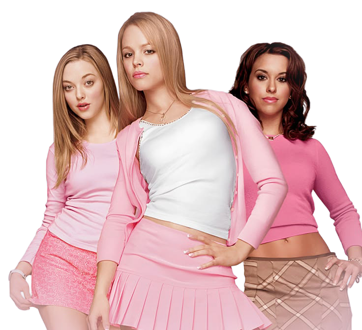
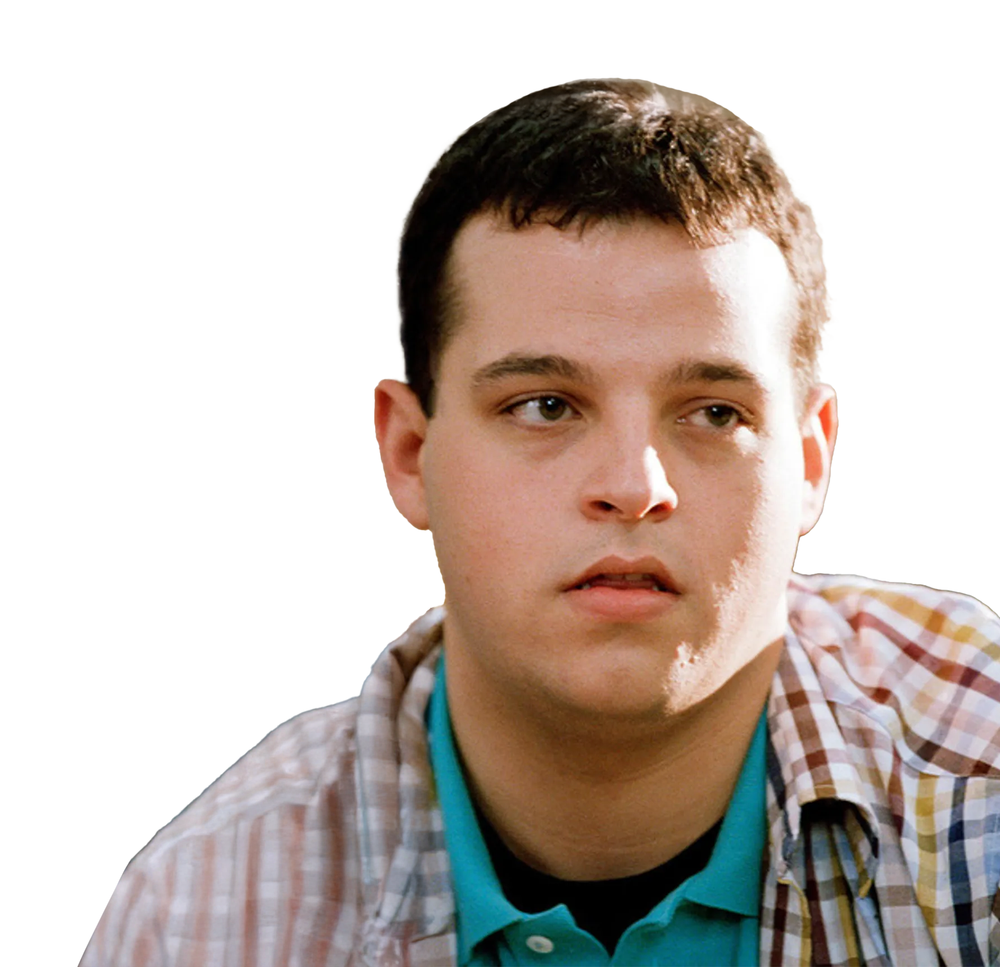
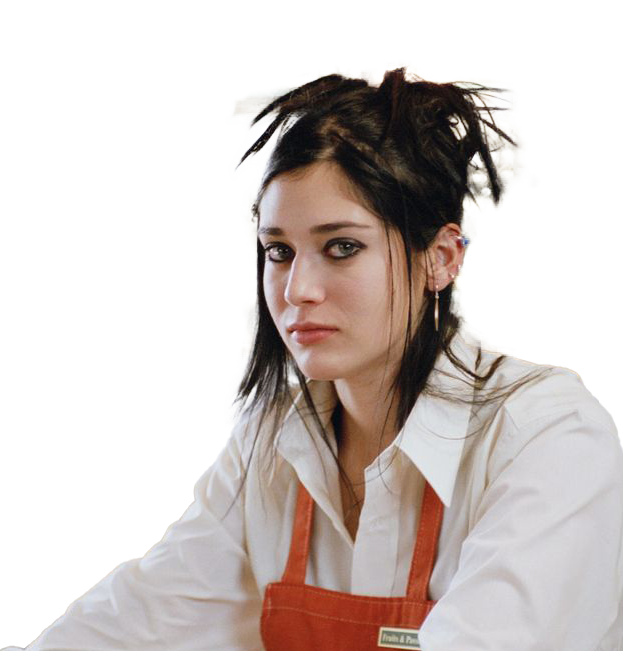

Архетипи подруг, стилізовані під культових героїнь. Знайди свій тип і дізнайся, як будувати здоровіші стосунки.
Дивитись архетипиДружба — це не завжди про “ми такі милі разом”. Іноді це про ролі, вплив і той самий вайб, який ти приносиш у компанію. Бо в кожній тусовці є своя ієрархія — просто не всі про це говорять вголос.
Хтось задає правила. Хтось їх порушує. Хтось спостерігає… а хтось робить так, що без неї ця компанія просто не працює.
І питання не в тому, хороша ти подруга чи ні. Питання в тому — яка саме ти подруга.

Гретхен — та, хто знає всі деталі і тримає систему. Вона турботлива і точна, але іноді залежить від підтвердження з боку інших.
+ відповідальна, надійна.
- тривожність, страх відмови.
Реджина — легко завойовує увагу і формує порядок у групі. Вона природжений лідер: знає, чого хоче і як це отримати. Друзі цінують її впевненість, але іноді вона може створювати тиск.
+ направляє енергію групи, приймає рішення.
- ігнорування емоцій інших.
Кеді — це та, до кого йдуть зі своїми секретами. Вона
чуйна, відкрита та щира. Інколи занадто переймається
проблемами інших і забуває про себе.
+ підтримка, чесність, відданість.
- емоційне вигорання, труднощі з межами.
Карен — ця подруга робить компанію веселішою, легко заводить знайомства і дарує сміх. Іноді може здаватися поверхневою, але її щирість — її сила.
+ створює настрій, знімає напругу.
- не помічає глибоких емоцій, уникає складних розмов.
Даміан — дає точні і об’єктивні поради, часто з іронією.
Вміє знімати драму, але інколи дистанціюється
від емоцій.
+ аналітичність, гумор.
- холодність, недостача емоційної присутності.

Дженіс — не боїться йти проти натовпу і завжди говорить своє. Це сила справжності, але іноді вона
травмує інших словами.
+ сміливість, автентичність.
- різкість у комунікації, ізоляція.
